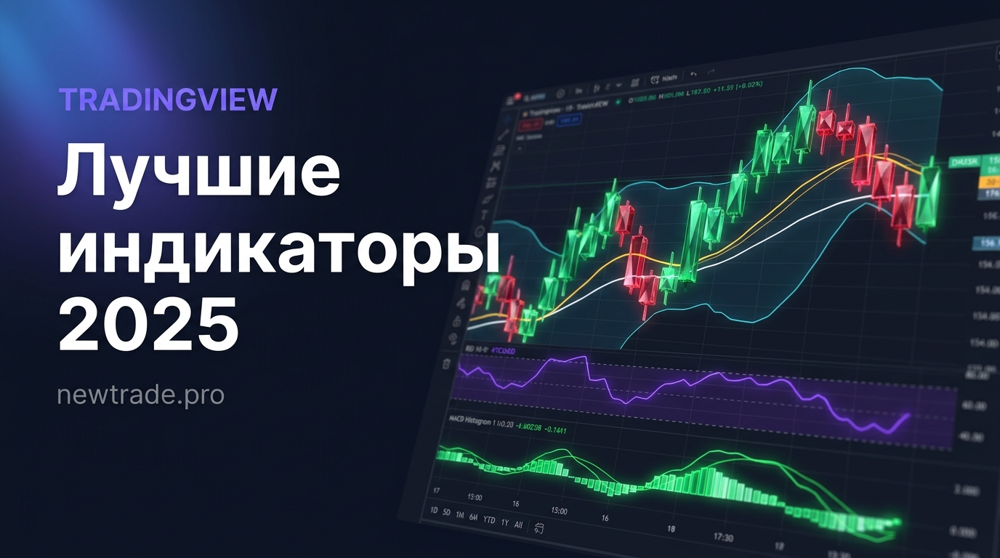

Лучшие индикаторы TradingView 2025: топ-7 для новичков и профессионалов

Каждый трейдер рано или поздно приходит к одному и тому же вопросу: «Какие индикаторы реально работают, а какие просто засоряют график?» TradingView предлагает более 100 000 инструментов — от классических скользящих средних до нейросетевых сканеров. Разобраться в этом хаосе без опыта практически невозможно.
В этой статье мы разберём 7 индикаторов, которые используют профессиональные трейдеры — не потому что они «модные», а потому что они дают реальное преимущество при принятии торговых решений. Без воды, с конкретными примерами применения.
Ни один индикатор не является «Святым Граалем». Лучший результат даёт грамотная комбинация нескольких инструментов, отражающих разные аспекты рынка: тренд, импульс, волатильность и объём.
Что такое технические индикаторы и как они работают
Технический индикатор — это математический расчёт на основе цены, объёма или времени, результат которого накладывается на график в виде линий, гистограмм или зон. Их задача — помочь трейдеру увидеть то, что невооружённым глазом заметить сложно:
- Тренд: куда движется рынок — вверх, вниз или в боковик?
- Импульс: насколько сильно это движение?
- Волатильность: как широко колышется цена?
- Объём: за кем стоят реальные деньги?
Хорошая торговая система строится на принципе «подтверждения»: сигнал от одного индикатора проверяется другим. Именно поэтому опытные трейдеры никогда не используют что-то одно. Готовые наборы инструментов для анализа — например, авторские индикаторы для TradingView — как раз решают эту задачу, объединяя несколько видов анализа в одном интерфейсе.
Топ-7 индикаторов TradingView: детальный разбор
1. RSI — Индекс относительной силы
RSI (Relative Strength Index) — король осцилляторов. Показывает, перекуплен или перепродан актив по шкале от 0 до 100. Значения выше 70 сигнализируют о перекупленности, ниже 30 — о перепроданности.
«RSI — это не сигнал к немедленному входу. Это предупреждение о том, что рынок находится в экстремальной зоне и стоит быть готовым к развороту.»
Как использовать:
- Зона выше 70: ищем сигналы на продажу (шорт), не входим в лонг
- Зона ниже 30: ищем сигналы на покупку, не открываем шорт
- Дивергенция RSI — одна из самых сильных торговых установок: цена обновляет минимум, RSI — нет
- Оптимальный таймфрейм: 4H и 1D для свинг-трейдинга
2. MACD — схождение/расхождение скользящих средних
MACD (Moving Average Convergence Divergence) — главный трендовый индикатор в арсенале большинства трейдеров. Состоит из двух линий и гистограммы. Пересечение линий MACD — классический сигнал на вход или выход из позиции.
Что умеет MACD:
- Определять направление и силу тренда
- Генерировать сигналы входа через пересечение линий
- Показывать ослабление тренда через дивергенцию с ценой
- Работать как на трендовых рынках, так и в период разворотов
Лучше всего MACD работает на таймфреймах 4H и 1D. На мелких таймфреймах даёт много ложных сигналов — учитывайте это.
3. Полосы Боллинджера (Bollinger Bands)
Полосы Боллинджера — это канал волатильности вокруг скользящей средней. Когда цена подходит к верхней полосе, рынок перегрет. Когда к нижней — возможен отскок. Когда полосы сужаются — жди взрывного движения.
«Сжатие» полос Боллинджера — один из лучших сигналов ожидаемого пробоя. Рынок не может долго находиться в низкой волатильности. После сжатия всегда следует расширение.
4. EMA 50 и EMA 200 — скользящие средние
Экспоненциальные скользящие средние (EMA) — фундамент технического анализа. Линия EMA 200 на дневном графике — это граница между бычьим и медвежьим рынком. Цена выше EMA 200 = мы в аптренде. Цена ниже = медведи контролируют рынок.
Классические сигналы EMA:
- «Золотой крест»: EMA 50 пересекает EMA 200 снизу вверх → мощный бычий сигнал
- «Мёртвый крест»: EMA 50 пересекает EMA 200 сверху вниз → медвежий сигнал
- Цена отбивается от EMA 50 в тренде → точка входа в позицию по тренду
5. Volume Profile — объёмный анализ
Volume Profile — это карта реальных денег на графике. Показывает, на каких ценовых уровнях происходило больше всего торговых операций. Уровни с высоким объёмом (POC — Point of Control) работают как магниты для цены.
В отличие от большинства индикаторов, Volume Profile не запаздывает — он основан на реальных сделках, а не на математических расчётах прошлых цен. Именно поэтому его так любят профессионалы и институциональные трейдеры.
6. Стохастик (Stochastic Oscillator)
Стохастик работает аналогично RSI, но более чувствителен к краткосрочным движениям. Особенно эффективен в боковых рынках и на малых таймфреймах (15M, 1H) для поиска точных точек входа. Классическое применение: пересечение линий %K и %D в зоне перекупленности/перепроданности.
7. ATR — средний истинный диапазон
ATR (Average True Range) — единственный индикатор в нашем списке, который не даёт сигналов на вход, но незаменим для управления рисками. Он показывает, насколько «широко» движется актив в среднем за выбранный период.
Практическое применение ATR:
- Стоп-лосс = цена входа ± 1.5–2 × ATR
- Тейк-профит = цена входа ± 3–4 × ATR (соотношение риск/прибыль 1:2)
- Высокий ATR = высокая волатильность, увеличивай дистанцию стопа
- Низкий ATR = рынок в консолидации, осторожно с входами
Сводная таблица: все 7 индикаторов
| Индикатор | Тип | Задача | Таймфрейм |
|---|---|---|---|
| RSI | Осциллятор | Перекупленность/перепроданность | Все таймфреймы |
| MACD | Трендовый | Сила и направление тренда | 4H, 1D |
| Bollinger Bands | Волатильность | Уровни поддержки и сопротивления | 1H, 4H |
| EMA 50/200 | Скользящие | Глобальный тренд и точки входа | 4H, 1D |
| Volume Profile | Объёмный | Зоны интереса крупных игроков | 1H, 4H, 1D |
| Stochastic | Осциллятор | Точки разворота в боковике | 15M, 1H |
| ATR | Волатильность | Размер стоп-лосса и тейк-профита | Все таймфреймы |
Как правильно комбинировать индикаторы
Профессиональный трейдер никогда не ставит на график 10 индикаторов сразу. Это создаёт «шум» и приводит к противоречивым сигналам. Правило простое: один инструмент на каждую задачу.
Рабочие связки для разных стилей торговли:
Свинг-трейдинг (удержание 2–7 дней)
- Тренд: EMA 50 + EMA 200
- Импульс: RSI (14)
- Вход: MACD на 4H для подтверждения
Интрадей (внутри дня)
- Тренд: Bollinger Bands на 1H
- Точка входа: Стохастик на 15M
- Управление рисками: ATR
Долгосрочные позиции
- Глобальный тренд: EMA 200 на 1W
- Объём: Volume Profile на 1D
- Перегрев: RSI на 1W
«Меньше индикаторов — больше ясности. Лучший трейдер тот, кто действует по системе, а не тот, у кого самый сложный график.»
5 ошибок при работе с индикаторами
- Торговать только по одному индикатору. Сигналы нужно подтверждать.
- Использовать стандартные настройки без адаптации. RSI(14) — хорошо, но RSI(7) на 15-минутном графике может работать лучше для вашей стратегии.
- Игнорировать таймфрейм. Индикатор на 1-минутном графике даст сотни ложных сигналов.
- Ждать «идеального» сигнала. Его не существует. Торгуй по вероятности.
- Отключать индикатор после нескольких убыточных сделок. Оценивай эффективность на выборке минимум 50–100 сделок.
Вывод
Семь индикаторов из нашего списка — это не случайный набор, а проверенная система. RSI и Стохастик отвечают за импульс. MACD и EMA — за тренд. Bollinger Bands и ATR — за волатильность. Volume Profile — за объём. Вместе они дают полную картину рынка.
Но даже лучшие индикаторы не заменят дисциплину, управление рисками и торговую систему. Именно поэтому профессиональные трейдеры часто автоматизируют свои стратегии — чтобы убрать эмоции из уравнения. Готовые решения, объединяющие несколько инструментов анализа в одном интерфейсе, — это следующий шаг для тех, кто хочет торговать системно, а не интуитивно.
🚀 Хотите торговать с готовыми индикаторами?
На newtrade.pro вы найдёте профессиональные индикаторы для TradingView, торгового робота и сервис копитрейдинга на Bybit — всё в одном месте.
Перейти на newtrade.pro →